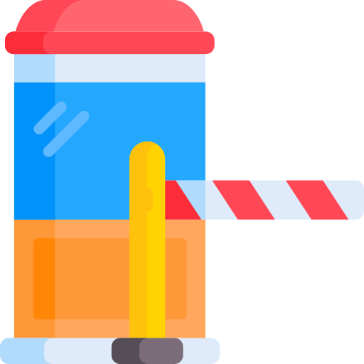
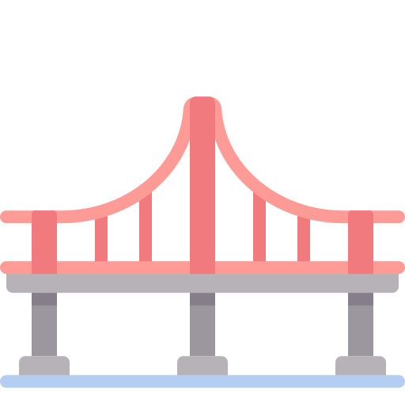
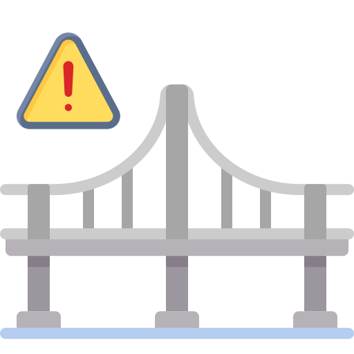

AV Nodal Block (The Tollbooth)
The AV Node Tollbooth is malfunctioning, but the His-Purkinje Bridge is perfectly intact downstream.
SA Node


Ventricles
✴️ — Injecting Atropine speeds up the toll worker, restoring 1:1 conduction.
Infranodal Block (The Damaged Bridge)
The AV Node works perfectly, but the His-Purkinje Bridge is fractured.
SA Node

Ventricles
✴️ — Injecting Atropine forces the SA node to fire faster, causing impulses to pile up and crash at the damaged bridge. Worsening the block.